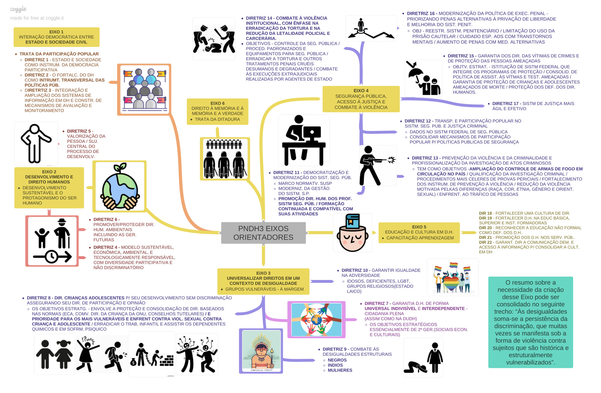

2 DESAFIOS DO ESTADO DE DIREITO: DEMOCRACIA E CIDADANIA
2.1 Estado de direito e a Constituição Federal de 1988: consolidação da democracia, representação política e participação cidadã.
O art. 1° da CF88 define o Estado Brasileiro como uma democracia representativa e participativa.
Estado de Direito: sistema em que o poder é limitado pela lei, garantindo direitos fundamentais e igualdade perante a lei.
O Estado de Direito é fundamentado na supremacia da lei e no respeito aos direitos individuais. A Constituição Federal de 1988 é um marco importante para a consolidação da democracia no Brasil, estabelecendo princípios que promovem a representação política e a participação cidadã. Garante a soberania popular - o povo como o titular legítimo do poder, não sendo, portanto, mais admissível que fosse exercido contra o seu próprio titular.
2.1.1 Representação Política - Partidos Políticos
Leitura: Direito Constitucional, Celso Spitzcovsky & Leda Pereira da Mota (9a edição). Capítulo 46 Partidos Políticos
O cerne do conceito de democracia está na noção de governo do povo, revelada pela própria etimologia do termo. Tendo em vista a extrema complexidade das relações sociais que permeiam todo o Estado moderno, mostrou-se inviável a utilização da chamada democracia direta, lançando-se mão da denominada democracia representativa na qual o povo, por eleições livres, na qualidade de titular do poder do Estado, elege seus representantes para o exercício de um mandato em seu nome e na defesa de seus interesses.
O modo de exercício da representatividade é através de partidos políticos, por aglutinarem em torno de si os potenciais representantes de uma determinada tendência política. Sobre os partidos:
- Importância: surgem como instrumentos para a viabilização da democracia representativa, uma vez que a filiação partidária surge como requisito de elegibilidade (art. 14 §3° V)
- Personalidade jurídica: São pessoas jurídicas de direito privado, demandando o cumprimento das exigências formuladas no art. 17 §2°da CF88
- Competências:
- Ajuizamento de ADINs, ADPFs, e ADECONs (art. 103 VIII)
- Ajuizamento de MS coletivo (art. 5° LXX “a”)
- Propositura de denúncia de Irregularidades ou ilegalidades perante os Tribunais de Contas (art. 74 §1°)
- Autonomia:
- Liberdade de criação, fusão, incorporação e extinção
- Autonomia para a definição de estrutura, organização e funcionamento, inclusive para coligações (art. 17)
- Fidelidade partidária (art. 17 §1°)
- Princípios constitucionais a serem observados:
- Soberania nacional
- Regime democrático
- Pluripartidarismo
- Direitos fundamentais da pessoa humana
- Caráter nacional
- Proibição de recebimento de recursos financeiros de entidade ou governo estrangeiros
- Prestação de contas à Justiça Eleitoral
2.1.2 Sobre a Participação Cidadã
Leitura: Modelos Contemporâneos de Democracia e o Papel das Associações (Lígia Helena Hahn Lüchmann, Rev. Sociol. Polít., Curitiba, v. 20, n. 43, p. 59-80, out. 2012)
Exercício da Cidadania é requisito central para a ruptura com o ciclo de subordinação e de injustiças sociais (Pateman 1992); Para Barber (1984), “ cidadania” significa participação ativa na vida pública, o envolvimento com os outros na constituição de um engajamento comum.
Democracia Liberal: concebe a democracia como um mecanismo de escolha de líderes políticos mediante a competição, entre os partidos, pelo voto, equiparando a dinâmica política ao jogo do mercado (MACPHERSON, 1978);
Democracia participativa: o foco central é o resgate dos ideais de autogoverno e de soberania popular por meio da participação dos cidadãos nos processos de discussão e de decisão política. Os participacionistas incorporam – ou combinam – pressupostos da democracia direta no interior da democracia representativa, dando ênfase à inclusão dos setores excluídos do debate político e à dimensão pedagógica da política. Prevê mecanismos de participação como plebiscitos, referendos e ação popular. Predomínio das “associações secundárias” (ver abaixo), com destaque aos movimentos sociais e comunitários.
Democracia Associativa: assume, de maneira mais enfática, e como revelado em sua própria denominação, o papel das associações nos processos de aprofundamento e de ampliação da democracia. Argumentos giram em torno da constatação dos diagnósticos acerca dos limites dos atores e das instituições políticas tradicionais (estados e partidos) frente ao acelerado aumento da complexidade dos fenômenos sociais. Destaca autonomia e voluntariado, que coloca as associações autônomas, voluntárias e/ou os movimentos sociais como atores centrais do conceito de sociedade civil.
Democracia Deliberativa: representativa e a redução da legitimidade do processo decisório ao resultado eleitoral, advoga que a legitimidade das decisões políticas advém de processos de discussão que, orientados pelos princípios da inclusão, do pluralismo, da igualdade participativa, da autonomia e do bem-comum, conferem um reordenamento na lógica do poder político do modelo democrático liberal. Aqui, as associações recebem abrigo no conceito de sociedade civil, e, embora também se ventilem diferenças e divergências quanto ao seu lugar político, são consideradas como atores mais diretamente vinculados aos interesses e problemas da vida social. Apresenta um quadro mais amplo de associações, reconhecendo a importância de organizações mais estruturadas e abrangentes, como sindicatos e associações profissionais.
Tipos de Associação (Warren 2201, Cooley 1983):
Associações Primárias: famílias e amizades, pois desenvolvem relações mais próximas e íntimas.
Associações Secundárias: embora também próximas, distanciam-se do tipo de laços das “associações primárias” e voltam-se para relações que transcendem o mundo individual, como os grupos cívicos, os clubes, as associações religiosas, entre tantas outras.
Associações Terciárias: os grupos de interesses e profissionais, nos quais os membros são relativamente anônimos entre si e têm pouco em comum, a não ser uma proposta específica a que perseguem
2.2 Divisão e coordenação de Poderes da República.
Leitura: Direito Constitucional, Celso Spitzcovsky & Leda Pereira da Mota (9a edição). Capítulo 13 Tripartição de Poderes.
O exercício do poder estatal é dividido em três funções, desde a sua origem, na Antiguidade grega: a função de criar normas que seriam obedecidas por toda a comunidade (o Poder Legislativo); a função de administrar a execução dessas normas (o Poder Executivo); e a função de julgar os litígios decorrentes da aplicação dessas normas genéricas e abstratas (Poder Judiciário). Foi em contestação ao Estado Absolutista que Montesquieu surgiu com a ideia de dividir as diferentes funções entre órgãos distintos e autônomos, não subordinados entre si e controladores um do outro (sistema de Freios e Contrapesos).
No Brasil, assim como a grande maioria dos estados modernos, adotou-se a teoria de Montesquieu abrandada, em nome de uma maior viabilidade da teoria:
- Se o Judiciário não pudesse legislar em alguns momentos, isso implicaria a submissão à vontade do Poder Legislativo para editar as normas necessárias a seu funcionamento;
- Se o Legislativo dependesse do Executivo para a contratação de funcionários, ficaria nas mãos deste, tendo em vista ser essa matéria de competência típica do Poder Executivo
Assim, foi positivada uma separação de funções do Estado que, de um lado, garantia a independência de cada um dos órgãos exercentes desse Poder e, de outro, assegurava seu funcionamento harmônico - que lhes permite, em caráter não preponderante, uma parcela de competência própria do outro Poder (funções atípicas, que lhe é atribuída constitucionalmente).
2.3 Presidencialismo como sistema de governo: noções gerais, capacidades governativas e especificidades do caso brasileiro.
2.3.1 Leitura: Direito Constitucional, Celso Spitzcovsky & Leda Pereira da Mota (9a edição). Capítulo 18 Poder Executivo.
A função executiva compreende o exercício de dois papéis distintos: a chefia de Estado (responsável pela representação do Estado nas relações internacionais) e a chefia de Governo (responsável pelo estabelecimento das diretrizes políticas e administrativas que deverão ser seguidas internamente). Se os dois papéis são desempenhados por um só órgão, é um sistema de Governo Presidencialista. Se são exercidas por órgãos diferentes, o sistema de Governo é Parlamentarista.
O presidente é o chefe das Forças Armadas e nomeia seus comandantes. Ele também nomeia os ministros do Supremo Tribunal Federal, seus ministros de Estado e de muitos outros cargos de importância da administração pública brasileira.
No presidencialismo, o Presidente da República coordena a Administração, as Forças Armadas, a direção e orientação da política externa e interna, auxiliado por um grupo de assessores demissíveis a qualquer momento - os Ministros de Estado.
Muitos cientistas políticos classificam o presidencialismo no Brasil como de coalizão, como forma de demonstrar a importância do Legislativo para a posição do presidente. Isso porque é fundamental para o presidente ter uma base aliada no Legislativo para que ele possa ter apoio nos seus projetos ao longo de seu mandato.
É também função do Presidente Sancionar, publicar, e fazer publicar as leis, bem como expedir os decretos e regulamentos para sua fiel execução (art. 84 inc. IV)
2.3.2 Capacidades Governativas no Presidencialismo
Capacidades governativas: o conjunto de elementos que possibilitam aos governos orientar o desenvolvimento em seus territórios. São elas a fiscalidade, os instrumentos e os recursos institucionais, políticos e humanos para o planejamento, a execução e a coordenação de políticas públicas.
O Presidente detém considerável poder de decisão e execução, o que facilita a implementação rápida de políticas, especialmente em situações de crise.
2.3.3 Especificidades do caso brasileiro
Pluripartidário, o que frequentemente resulta em uma fragmentação partidária no Legislativo - e leva à “coalizão” pelos desafios na constituição de maiorias consistentes nas Casas, o que leva invariavelmente (pelo por mim observado) a incoerências políticas.
Desafios como instabilidade política e exemplos práticos como o impeachment ilustram as características do presidencialismo.
2.4 Efetivação e reparação de Direitos Humanos: memória, autoritarismo e violência de Estado.
A efetivação e reparação de Direitos Humanos são pilares fundamentais para construir uma sociedade justa e respeitadora dos direitos individuais. No contexto brasileiro, a memória, o enfrentamento ao autoritarismo e a superação da violência de Estado são temas cruciais nesse processo.
É a garantia prática e concreta dos direitos fundamentais e dos direitos previstos na Declaração Universal dos Direitos Humanos.
Os Direitos Fundamentais são classificados em direitos de primeira geração (liberdades públicas e os direitos e garantias individuais clássicos), de segunda geração (direitos econômicos e culturais) e de terceira geração (direitos de solidariedade e direitos difusos como o direito do consumidor e ao meio ambiente equilibrado)
São os direitos fundamentais, listados no art. 5° da Constituição Federal: Direitos individuais em espécie; Direito à vida; Princípio de Igualdade; Princípio da Legalidade; Liberdade de manifestação do pensamento; Liberdade de consciência, de crença e de culto; Liberdade de informação; Liberdade de locomoção; Liberdade de reunião; Liberdade de associação; Direito à segurança; Intimidade, vida privada, honra e imagem; Inviolabilidade do domicílio; Inviolabilidade das comunicações interpessoais; Comunicação por correspondência; Comunicação telegráfica; Comunicação de dados, sigilo bancário e fiscal; Comunicação telefônica; Acesso ao Poder Judiciário; Irretroatividade da Lei; Devido Processo Legal; Segurança em material penal; Direito de Propriedade.
Outros direitos fundamentais não mencionados explicitamente no Título II da CF88 são: direito do consumidor, ao meio ambiente saudável, à saúde, etc.
2.4.1 Reparação de Direitos Humanos:
Contexto Histórico no Brasil:
- Necessidade de reparação por violações ocorridas durante o regime autoritário (1964-1985).
Comissões da Verdade:
Criadas para investigar violações de Direitos Humanos durante o período autoritário.
Contribuem para a memória e justiça histórica.
2.4.2 Memória, Autoritarismo e Violência de Estado:
Preservação da Memória:
- Importância de lembrar e reconhecer os eventos do passado para evitar a repetição de injustiças.
Enfrentamento ao Autoritarismo:
- Promover a democracia e garantir que atos autoritários não se repitam.
Superar a Violência de Estado:
- Desenvolver políticas que assegurem que o Estado não seja um agente de violência contra os cidadãos.
2.4.3 Leitura: Quais Direitos Humanos? Que Universalismo? Preliminares e Obstáculos à Universalização do Direito. Maria Lucia de Paula Oliveira. Primeiro artigo da parte 2 do livro Direitos Humanos, Democracia e Desenhos Institucionais em tempos de crise. ISBN: 978-85-7987-351-5.
O texto traz uma leitura da o desafio do reconhecimento dos Direitos Humanos no plano internacional.
Antes, um curto panorama do Brasil:
O plano do direito garantido pelo Estado, o modelo concebido seria de que os direitos humanos ou fundamentais são garantidos pelo Estado, ao mesmo tempo em que limitam seu poder. A inclusão da Declaração de Direitos (Humanos) na Constituição faz com que esses direitos sejam estendidos a todos os cidadãos no âmbito do território estatal.
Na prática, existe grande frustração quanto à efetivação dos direitos, já que inexistem políticas públicas (ou são limitadas) com eficiência suficiente para garantir uma boa parte desses direitos à maioria da população. Fala-se em direito à vida ou direito à liberdade de locomoção, mas não se consegue estabelecer uma política de segurança pública minimamente eficiente.
Agora sim: Constitucionalismo Global, Democracia e Direitos Humanos.
Vêm se aprofundando, desde a Carta da ONU de 1945, interseções entre o sistema de direito internacional e o o sistema de direito doméstico, com a progressiva institucionalização e legalização de uma ordem jurídica global que passa a clamar, em muitos casos, por uma supremacia em relação ao direito doméstico, especialmente diante de ferimentos aos direitos humanos.
As principais críticas que se fazem à universalização dos Direitos Humanos, mesmo no âmbito do direito estatal, concernem à insuficiência dos mecanismos para fazer valer esses direitos de forma geral. A grande dificuldade é a organização de políticas públicas que consigam efetiva os direitos humanos. Não é incomum se criticar “os direitos humanos”, como se fossem um ser, com vida própria, que não dependesse do próprio sistema democrático para sua efetivação. As deficiências dsa políticas públicas de direitos humanos geram uma descrença com relação aos próprios direitos e uma relativização de suas importâncias.
2.4.4 Leitura: Análise da Agricultura Familiar como meio de realização do direito humano à alimentação adequada às repercussões do agronegócio. Layze Rocha Cabido & Lilian Balmant Emerique, Livro Direitos Humanos, Desenvolvimento Sustentável e Luta Contra Desigualdades, página 105 ISBN 978-65-88781-05-0:
O texto tem como objetivo central analisar, nume perspectiva crítica, a realização do direito humano à alimentação adequada (DHAA) no contexto governamental - como uma política pública por meio do fomento à Agricultura Familiar. Por isso se debruça sobre o Programa de Aquisição de Alimentos (PAA) devido à sua contribuição para o combate à fome por meio do desenvolvimento da produção agroalimentar de matriz familiar.
O papel da Agricultura Familiar para a garantia do direito à alimentação adequada tem sido gradualmente mitigado com o avanço dos interesses neoliberais na produção e consumo de alimentos e com o fortalecimento do modelo agroexportador de desenvolvimento rural pautado no extrativismo predatório agrário, modelo fomentador do imperialismo.
O conteúdo e a eficácia do DHAA não se restringe ao fornecimento de alimentos em quantidades suficientes para suprir as carências nutricionais, mas engloba elementos como o acesso regular, permanente a produtos seguros, saudáveis e produzidos de forma sustentável com respeito à biodiversidade, aos hábitos alimentares regionais e condizentes com as gerações destinatárias, bem como a criação de condições favoráveis para a produção de alimentos orgânicos ou agroecológicos.
O primeiro reconhecimento do DHAA aparece na Declaração Universal dos Direitos Humanos (1948). Como meio de instrumentalizar e reforçar a observância da Declaração, em 1966 foi elaborado o Pacto Internacional dos Direitos Econômicos, Sociais e Culturais (PIDESC, 1966), que prevê o direito à alimentação como um direito social sob duas dimensões: o direito de estar ao abrigo da fome e o direito a uma alimentação adequada (FAO, 2014, p.4). Condiciona aos Estados signatários do Pacto à obrigação de respeitar, proteger e implementá-lo por meio de uma atuação positiva voltada à adoção de medidas e programas que prezem por regimes agrários sustentáveis e que visem melhorar a produção, a conservação e a distribuição equitativa dos recursos produzidos.
Foi na Cúpula Mundial de Alimentação em 1996 que foi elaborado o Comentário Geral n.12 da ONU, que aprimora o conteúdo - muito abrangente - do DHAA e das medidas a serem executadas para a sua plena efetividade. No Comentário, o conteúdo do DHAA em sua forma apresentada compreende a adequação, a sustentabilidade e a disponibilidade de alimentos como fatores fundamentais para seu pleno alcance. O DHAA passa a ser indivisível com a justiça social e a necessidade de conjugar questões ambientais e econômicas no processo de sua realização.
No plano nacional, a CF88 apresenta-se em consonância com os tratados e pactos internacionais ao conferir-lhes o status de norma constitucional (art. 5° §2°), e apresentar a dignidade humana como fundamento do Estado de Direito Democrático brasileiro (art. 1/, III, CRFB). A inclusão da alimentação como um direito ocorreu na promulgação da Emenda Constitucional n° 64/2010, que o introduziu no rol de direitos sociais do art. 6°.
A Lei de Segurança Alimentar e Nutricional (Lei 11.346/2006) define a Segurança Alimentar e Nutricional (SAN) como “a realização do direito de todos ao acesso regular e permanente de alimentos de qualidade, em quantidade suficiente, sem comprometer o acesso a outras necessidades essenciais, tendo como base práticas alimentares promotoras de saúde que respeitem a diversidade cultural e que sejam ambiental, cultural, econômica e socialmente sustentáveis”. A lei também cria o SISAN - Sistema Nacional de Segurança Alimentar e Nutricional.
O Conselho Nacional de Segurança Alimentar (COSAN) define que insegurança alimentar pode ser detectada a partir de diferentes tipos de problemas como fome, obesidade, doenças associadas à má alimentação, consumo de alimentos de qualidade duvidosa ou prejudicial à saúde, estrutura de produção de alimentos predatória em relação ao ambiente e bens essenciais com preços abusivos e imposição de padrões alimentares que não respeitem a diversidade cultural.
Agricultura Familiar como mecanismo de realização do DHAA: uma alternativa?
No Brasil, há dois regimes de produção de alimentos: o agronegócio e a agricultura familiar:
Agricultura familiar: a principal forma de abastecimento alimentar no Brasil.
- pequenas propriedades;
- mão de obra: núcleo familiar;
- policultura: produção otimizada e consciente, respeita os limites físicos e temporais da natureza e enriquece a alimentação com maior variedade de produtos. A diversificação de culturas e a integração das atividades são postos chaves para a manutenção da fertilidade dos sistemas, para o controle de pragas e doenças e para a estabilidade econômica. A agricultura familiar aplica métodos de cultivo tradicionais, associando práticas de produção orgânica ou agroecológica, visando evitar o uso de agrotóxicos e produtos químicos geradores de danos ambientais e à saúde dos consumidores.
- a agricultura orgânica: termo é utilizado, via de regra, ao substituir os insumos químicos por biológicos, mantendo o agricultor/a dependente desses insumos. Insumos esses, mesmo que ambientalmente corretos, por vezes concentrados nas mãos de empresas que mantém o agronegócio. Trata-se de uma agricultura interessada mais em uma fatia de mercado, do que da produção massiva e acessível de alimentos de qualidade à população.
- a prática agroecológica: destaca-se por ser uma forma de produzir alimentos independentemente de sementes e insumos advindos de empresas ligadas ao agronegócio, o que proporciona a autonomia dos agricultores quanto aos métodos e técnicas agrícolas gerando a viabilidade dessa modalidade para o alcance da Soberania Alimentar. Produz e beneficia alimentos levando em conta a adaptação das plantas ao clima, ao solo e as próprias estações do ano, ou seja, às condições ambientais adequadas. Conjuga elementos como a sustentabilidade, o respeito à natureza e às suas oscilações e a preocupação em produzir alimentos de qualidade, com autonomia e preços acessíveis que coadunam com os princípios da SAN.
- A produção é realizada de forma dissociada aos interesses de mercado e independente dos insumos adquiridos pelo agronegócio rompendo com a sujeição às transnacionais para a produção nas pequenas propriedades.
Agronegócio:
atividade agrícola propagadora das tendências capitalistas de raiz neoliberal
baixo emprego de mão de obra, ocasionando o êxodo rural
depende de insumos derivados de petróleo e minerais (não renováveis)
larga escala, grandes extensões de terras, latifúndio monocultor
engloba não só a produção, distribuição e venda de produtos derivados da agropecuária, como também a indústria e comercialização de insumos como fertilizantes, agrotóxicos e máquinas.
produção voltada para o mercado externo, com o plantio de culturas específicas adequado às demandas internacionais, tornando-o importante modalidade agrícola de aceleração da economia e de desenvolvimento econômico do país.
- sua importância e impacto no PIB prevalecem sobre os impactos e prejuízos ambientais e sociais: perda da biodiversidade pela introdução de sementes transgênicas (perde-se as sementes originais, o cultivar original), a erosão do solo, a contaminação de lençóis freáticos, de rios e do ar pelo uso indiscriminado de pesticidas e agrotóxicos, além de ocasionar o êxodo rural, exclusão social e econômica.
2.5 Programa Nacional de Direitos Humanos PNDH-3 (Decreto nº 7.037/2009).
O PNDH-1 (1996) teve maior ênfase na garantia dos direitos individuais e políticos. O programa foi revisado e atualizado em 2002, criando o PNDH-2, com uma ampliação e com a incorporação dos direitos econômicos, sociais e culturais.
O atual Programa Nacional de Direitos Humanos, conhecido como PNDH-3, estabelece diretrizes e ações para a promoção e proteção dos direitos fundamentais no Brasil. Implementado pelo Decreto nº 7.037/2009, apresenta as bases de uma Política de Estado para os Direitos Humanos. O Programa está estruturado em seis eixos orientadores, subdivididos em 25 diretrizes, 86 objetivos estratégicos e 521 ações programáticas.
2.5.1 Objetivos do PNDH-3:
- Promover a igualdade: Combater todas as formas de discriminação e promover a igualdade entre os cidadãos
- Garantir a Participação Social: Fortalecer mecanismos de participação da sociedade civil na formulação e implementação de políticas públicas.
2.5.2 Eixos Orientadores do PNDH-3:
- Interação entre Estado e Sociedade Civil: Estabelecer uma relação colaborativa para assegurar a efetivação dos direitos humanos.
- Desenvolvimento e Direitos Humanos: estratégia é centrada na inclusão social e em garantir o exercício do amplo da cidadania, garantindo espaços consistentes às estratégias de desenvolvimento local e territorial, agricultura familiar, pequenos empreendimentos, cooperativismo e economia solidária.
- Universalização de Direitos em um Contexto de Desigualdade: Buscar a universalização do acesso a serviços públicos e a efetiva garantia de direitos para todos.
- Segurança Pública, Acesso à Justiça e Combate à Violência: aborda em suas diretrizes e objetivos estratégicos metas para a diminuição da violência, redução da discriminação e da violência sexual, erradicação do tráfico de pessoas e da tortura. Propõe reformular o sistema de Justiça e Segurança Pública, avançando propostas de garantia do acesso universal à Justiça, com disponibilização de informações à população, fortalecimento dos modelos alternativos de solução de conflitos e modernização da gestão do sistema judiciário.
- Educação e Cultura em Direitos Humanos: este eixo prioritário e estratégico se traduz em uma experiência individual e coletiva que atua na formação de uma consciência centrada no respeito ao outro, na tolerância, na solidariedade e no compromisso contra todas as formas de discriminação, opressão e violência.
- Direito à Memória e à Verdade: A memória histórica é componente fundamental na construção da identidade social e cultural de um povo e na formulação de pactos que assegurem a não-repetição de violações e Direitos Humanos, rotineiras em todas as ditaduras, de qualquer lugar do planeta. O conteúdo cental da proposta é afirmar a importância da memória e da verdade como princípios históricos dos Direitos Humanos.

2.5.3 Ações do PNDH-3:
- Direito à Memória e à Verdade: Fortalecimento das ações de esclarecimento sobre violações ocorridas durante o período autoritário.
- Promoção da Igualdade Racial e de Gênero: Implementação de políticas afirmativas para superar desigualdades históricas.
- Enfrentamento à Violência: Adoção de estratégias para combater a violência, especialmente contra grupos vulneráveis.
2.5.4 Desafios e Avanços do PNDH-3:
- Desafios na Implementação: Resistência a algumas propostas, exigindo esforços contínuos para superar obstáculos.
- Avanços na Promoção de Direitos: Reconhecimento de conquistas significativas na promoção e proteção dos direitos humanos.
2.5.5 Reações ao PNDH-3 (fonte, de 2021):
O PNDH-3 foi, ainda, um marco em termos de participação popular. Estima-se que 14 mil pessoas se envolveram na discussão. O resultado foi um documento que avançava em questões sociais sensíveis. Falava, por exemplo, em apoio à descriminalização do aborto. E em “desenvolver mecanismo para impedir a ostentação de símbolos religiosos em estabelecimentos públicos da União”. Falava, inda, em criar uma Comissão Nacional da Verdade, para analisar os crimes cometidos durante a ditadura militar.
A reação contrária foi virulenta. O documento foi assinado por todos os ministérios mas, segundo relatos, deixou desconfortável o ministro da Defesa, Nelson Jobim. Jobim temia a reação dos militares à Comissão da Verdade. “A partir daí, ele se articulou com outros atores que também não se sentiam confortáveis com o programa”, conta D’Addio. Era o caso de grupos religiosos e do agronegócio. A senadora Kátia Abreu, então presidente da Associação de Agricultura e Pecuária do Brasil , chamou de “preconceituoso” o tratamento legado pelo programa ao agronegócio: “saem a democracia, a justiça, a tolerância e o consenso e entra a velha visão esquerdista e ideológica que a humanidade enterrou sem lágrimas nas últimas décadas, depois de muito sofrimento e muita miséria”, escreveu, em artigo publicado no jornal Folha de S. Paulo. Já o jurista Ives Gandra afirmou que, com o PNDH-3, o governo pretendia eliminar a oposição, à moda do que fizera o governo Venezuelano.
Os ataques forçaram o governo, em ano de eleição, a recuar. Em maio de 2010, foi publicada uma nova versão do programa, mais tímida. Em lugar de descriminalizar o aborto, por exemplo, o novo texto baixava o tom, para dizer que o governo deveria considerar o aborto um tema de saúde pública, “com a garantia dos acesso aos serviços de saúde”.
A avaliação é de que, nos anos seguintes, o governo titubeou na implementação do programa. “A partir dali, o PNDH-3 perdeu fôlego político”, afirma Carbonari.
2.6 Combate às discriminações, desigualdades e injustiças: de renda, regional, racial, etária e de gênero.
O combate às discriminações, desigualdades e injustiças é crucial para construir uma sociedade justa e inclusiva. No Brasil, diversas formas de discriminação, desigualdade e injustiça são alvo de atenção, e políticas públicas são implementadas para promover a equidade.
Desigualdade de Renda: Disparidades na distribuição de recursos financeiros entre diferentes grupos sociais.
Políticas de Redução da Desigualdade: Implementação de programas sociais e de transferência de renda para promover a inclusão social.
Desigualdade Regional: Diferenças no desenvolvimento econômico e social entre as diversas regiões do Brasil.
Políticas de Desenvolvimento Regional: Incentivo a projetos que visam reduzir as disparidades regionais, promovendo um desenvolvimento mais equitativo.
Discriminação Racial - Combate ao Racismo: Implementação de políticas afirmativas e ações para enfrentar o racismo estrutural e promover a igualdade racial.
Desigualdade Etária - Desafios da População Jovem e Idosa: Políticas específicas para atender às necessidades e desafios enfrentados por diferentes faixas etárias.
Discriminação de Gênero - Promoção da Igualdade de Gênero: Implementação de medidas para combater a discriminação de gênero e promover a igualdade entre homens e mulheres.
Desafios e Exemplos Práticos:
Desafios no Combate às Desigualdades: Persistência de Estereótipos: Necessidade de desconstruir estereótipos que perpetuam desigualdades.
Exemplos Práticos - Cotas Raciais e de Gênero: Mecanismos para promover a representatividade e superar barreiras históricas
2.6.1 Leitura: Pequeno Manual Antirracista. Djamila Ribeiro. Companhia das Letras, 2019. Capítulo 6 - Apoie Políticas Educacionais Afirmativas.
POR CAUSA DO RACISMO ESTRUTURAL, a população negra tem menos condições de acesso a uma educação de qualidade. Geralmente, quem passa em vestibulares concorridos para os principais cursos nas melhores universidades públicas são pessoas que estudaram em escolas particulares de elite, falam outros idiomas e fizeram intercâmbio. E é justamente o racismo estrutural que facilita o acesso desse grupo.
Esse debate não é sobre capacidade, mas sobre oportunidades — e essa é a distinção que os defensores da meritocracia parecem não fazer. Um garoto que precisa vender pastel para ajudar na renda da família e outro que passa as tarde em aulas de idiomas e de natação não partem do mesmo ponto.
Embora as desigualdades nas oportunidades para negros e brancos ainda sejam enormes, políticas públicas mostraram que têm potencial transformador na área. O caso das cotas raciais é notável. Na época em que o debate sobre ações afirmativas estava acalorado, um dos principais argumentos contrários à implementação de cotas raciais nas universidades era “as pessoas negras vão roubar a minha vaga”. Por trás dessa frase está o fato de que pessoas brancas, por causa de seu privilégio histórico, viam as vagas em universidades públicas como suas por direito.
2.6.2 Leitura: Programa Nacional de Direitos Humanos (PNDH-3). Eixo Orientador III - Universalizar Direitos em um Contexto de Desigualdade.
Nesta seção trago as diretrizes do PNDH-3 sobre este tema. Apesar de não ter sido posto efetivamente em prática, o caminho está dado.
2.6.2.1 Diretriz 9 - Combate às desigualdades estruturais
2.6.2.1.1 Objetivo Estratégico I: Igualdade e proteção dos direitos das populações negras, historicamente afetadas pela discriminação e outras formas de intolerância:
- Apoiar, junto ao Poder Legislativo, a aprovação do Estatuto da Igualdade Racial
- Promover ações articuladas entre as políticas de educação, cultura, saúde e de geração de emprego e renda, visando incidir diretamente na qualidade de vida da população negra e no combate à violência racial.
- Elaborar programas de combate ao racismo institucional e estrutural, implementando normas administrativas e legislação nacional e internacional.
- Realizar levantamento de informações para produção de relatórios periódicos de acompanhamento das políticas contra a discriminação racial, contendo, entre outras, informações sobre inclusão no sistema de ensino (básico e superior), inclusão no mercado de trabalho, assistência integrada à saúde, número de violações registradas e apuradas, recorrências de violações, e dados populacionais e de renda.
- Analisar periodicamente os indicadores que apontam desigualdades visando à formulação e implementação de políticas públicas afirmativas que valorizem a promoção da igualdade racial.
- Fortalecer a integração das políticas públicas em todas as comunidades remanescentes de quilombos localizadas no território brasileiro.
- Fortalecer os mecanismos existentes de reconhecimento das comunidades quilombolas como garantia dos seus direitos específicos.
- Fomentar programas de valorização do patrimônio cultural das populações negras.
- Assegurar o resgate da memória das populações negras, mediante a publicação da história de resistência e resgate de tradições das populações das diásporas.
2.6.2.1.2 Objetivo Estratégico II: Garantia aos povos indígenas da manutenção e resgate das condições de reprodução, assegurando seus modos de vida.
- Assegurar a integridade das terras indígenas para proteger e promover o modo de vida dos povos indígenas.
- Proteger os povos indígenas isolados e de recente contato para garantir sua reprodução cultural e etnoambiental.
- Aplicar os saberes dos povos indígenas e das comunidades tradicionais na elaboração de políticas públicas, respeitando a Convenção n° 169 da OIT.
- Apoiar projetos de lei com objetivo de revisar o Estatuto do Índio com base no texto constitucional de 1988 e na Convenção n° 169 da OIT.
- Elaborar relatório periódico de acompanhamento das políticas indigenistas que contemple dados sobre os processos de demarcações das terras indígenas, dados sobre intrusões e conflitos territoriais, inclusão no sistema de ensino (básico e superior), assistência integrada à saúde, número de violações registradas e apuradas, recorrências de violações e dados populacionais.
- Proteger e promover os conhecimentos tradicionais e medicinais dos povos indígenas.
- Implementar políticas de proteção do patrimônio dos povos indígenas, por meio dos registros material e imaterial, mapeando os sítios históricos e arqueológicos, a cultura, as línguas e a arte.
- Promover projetos e pesquisas para resgatar a história dos povos indígenas.
- Promover ações culturais para o fortalecimento da educação escolar dos povos indígenas, estimulando a valorização de suas próprias formas de produção do conhecimento.
- Garantir o acesso à educação formal pelos povos indígenas, bilíngues e com adequação curricular formulada com a participação de representantes das etnias indigenistas e especialistas em educação.
- Assegurar o acesso e permanência da população indígena no ensino superior, por meio de ações afirmativas e respeito à diversidade étnica e cultural.
- Adotar medidas de proteção dos direitos das crianças indígenas nas redes de ensino, saúde e assistência social, em consonância com a promoção dos seus modos de vida.
2.6.2.1.3 Objetivo Estratégico III: Garantia dos direitos das mulheres para o estabelecimento das condições necessárias para sua plena cidadania.
- Desenvolver ações afirmativas que permitam incluir plenamente as mulheres no processo de desenvolvimento do País, por meio da promoção da sua autonomia econômica e de iniciativas produtivas que garantam sua independência.
- Incentivar políticas públicas e ações afirmativas para a participação igualitária, plural e multirracial das mulheres nos espaços de poder e decisão.
- Elaborar relatório periódico de acompanhamento das políticas para mulheres com recorte étnico-racial, que contenha dados sobre renda, jornada e ambiente de trabalho, ocorrências de assédio moral, sexual e psicológico, ocorrências de violências contra a mulher, assistência à saúde integral, dados reprodutivos, mortalidade materna e escolarização.
- Divulgar os instrumentos legais de proteção às mulheres, nacionais e internacionais, incluindo sua publicação em formatos acessíveis, como braile, CD de áudio e demais tecnologias assistivas.
- Ampliar o financiamento de abrigos para mulheres em situação de vulnerabilidade, garantindo plena acessibilidade.
- Propor tratamento preferencial de atendimento às mulheres em situação de violência doméstica e familiar nos Conselhos Gestores do Fundo Nacional de Habitação de Interesse Social e junto ao Fundo de Desenvolvimento Social.
- Considerar o aborto como tema de saúde pública, com a garantia do acesso aos serviços de saúde. (Redação dada pelo Decreto nº 7.177, de 2010) Redação anterior:
Apoiar a aprovação do projeto de lei que descriminaliza o aborto, considerando a autonomia das mulheres para decidir sobre seus corpos. - Realizar campanhas e ações educativas para desconstruir os estereótipos relativos às profissionais do sexo.
2.6.2.2 Diretriz 10 - Garantia da igualdade na diversidade
2.6.2.2.1 Objetivo Estratégico I: Afirmação da diversidade para construção de uma sociedade igualitária.
- Realizar campanhas e ações educativas para desconstrução de estereótipos relacionados com diferenças étnico-raciais, etárias, de identidade e orientação sexual, de pessoas com deficiência, ou segmentos profissionais socialmente discriminados.
- Incentivar e promover a realização de atividades de valorização da cultura das comunidades tradicionais, entre elas ribeirinhos, extrativistas, quebradeiras de coco, pescadores artesanais, seringueiros, geraizeiros, varzanteiros, pantaneiros, comunidades de fundo de pasto, caiçaras e faxinalenses.
- Fomentar a formação e capacitação em Direitos Humanos, como meio de resgatar a autoestima e a dignidade das comunidades tradicionais, rurais e urbanas.
- Apoiar políticas de acesso a direitos para a população cigana, valorizando seus conhecimentos e cultura.
- Apoiar e valorizar a associação das mulheres quebradeiras de coco, protegendo e promovendo a continuidade de seu trabalho extrativista.
- Elaborar relatórios periódicos de acompanhamento das políticas direcionadas às populações e comunidades tradicionais, que contenham, entre outras, informações sobre população estimada, assistência integrada à saúde, número de violações registradas e apuradas, recorrência de violações, lideranças ameaçadas, dados sobre acesso à moradia, terra e território e conflitos existentes.
2.6.2.2.2 Objetivo Estratégico II: Proteção e promoção da diversidade das expressões culturais como Direito Humano.
- Promover ações de afirmação do direito à diversidade das expressões culturais, garantindo igual dignidade e respeito para todas as culturas.
- Incluir nos instrumentos e relatórios de políticas culturais a temática dos Direitos Humanos.
2.6.2.2.3 Objetivo Estratégico III: Valorização da pessoa idosa e promoção de sua participação na sociedade.
- Promover a inserção, a qualidade de vida e a prevenção de agravos aos idosos, por meio de programas que fortaleçam o convívio familiar e comunitário, garantindo o acesso a serviços, ao lazer, à cultura e à atividade física, de acordo com sua capacidade funcional.
- Apoiar a criação de centros de convivência e desenvolver ações de valorização e socialização da pessoa idosa nas zonas urbanas e rurais.
- Fomentar programas de voluntariado de pessoas idosas, visando valorizar e reconhecer sua contribuição para o desenvolvimento e bem-estar da comunidade.
- Desenvolver ações que contribuam para o protagonismo da pessoa idosa na escola, possibilitando sua participação ativa na construção de uma nova percepção intergeracional.
- Potencializar ações com ênfase no iálogo intergeracional, valorizando o conhecimento acumulado das pessoas idosas.
- Desenvolver ações intersetoriais para capacitação continuada de cuidadores de pessoas idosas.
- Desenvolver política de humanização do atendimento ao idoso, principalmente em instituições de longa permanência.
- Elaborar programas de capacitação para os operadores dos direitos da pessoa idosa.
- Elaborar relatório periódico de acompanhamento das políticas para pessoas idosas que contenha informações sobre os Centros Integrados de Atenção a Prevenção à Violência, tais como: quantidade existente; sua participação no financiamento público; sua inclusão nos sistemas de atendimento; número de profissionais capacitados; pessoas idosas atendidas; proporção dos casos com resoluções; taxa de reincidência; pessoas idosas seguradas e aposentadas; famílias providas por pessoas idosas; pessoas idosas em abrigos; pessoas idosas em situação de rua; principal fonte de renda dos idosos; pessoas idosas atendidas, internadas e mortas por violência ou maus-tratos.
2.6.2.2.4 Objetivo Estratégico IV: Promoção e proteção dos direitos das pessoas com deficiência e garantia da acessibilidade igualitária.
- Garantir às pessoas com deficiência igual e efetiva proteção legal contra a discriminação.
- Garantir salvaguardas apropriadas e efetivas para prevenir abusos a pessoas com deficiência e pessoas idosas.
- Assegurar o cumprimento do Decreto de Acessibilidade (Decreto no 5.296/2004), que garante a acessibilidade pela adequação das vias e passeios públicos, semáforos, mobiliários, habitações, espaços de lazer, transportes, prédios públicos, inclusive instituições de ensino, e outros itens de uso individual e coletivo.
- Garantir recursos didáticos e pedagógicos para atender às necessidades educativas especiais.
- Disseminar a utilização dos sistemas braile, tadoma, escrita de sinais e libras tátil para inclusão das pessoas com deficiência em todo o sistema de ensino.
- Instituir e implementar o ensino da Língua Brasileira de Sinais como disciplina curricular facultativa.
- Propor a regulamentação das profissões relativas à implementação da acessibilidade, tais como: instrutor de Libras, guia-intérprete, tradutor-intérprete, transcritor, revisor e ledor da escrita braile e treinadores de cães-guia.
- Elaborar relatórios sobre os Municípios que possuam frota adaptada para subsidiar o processo de monitoramento do cumprimento e implementação da legislação de acessibilidade.
2.6.2.2.5 Objetivo Estratégico V: Garantia do respeito à livre orientação sexual e identidade de gênero.
- Desenvolver políticas afirmativas e de promoção de cultura de respeito à livre orientação sexual e identidade de gênero, favorecendo a visibilidade e o reconhecimento social.
- Apoiar projeto de lei que disponha sobre a união civil entre pessoas do mesmo sexo.
- Promover ações voltadas à garantia do direito de adoção por casais homoafetivos.
- Reconhecer e incluir nos sistemas de informação do serviço público todas as configurações familiares constituídas por lésbicas, gays, bissexuais, travestis e transexuais, com base na desconstrução da heteronormatividade.
- Desenvolver meios para garantir o uso do nome social de travestis e transexuais.
- Acrescentar campo para informações sobre a identidade de gênero dos pacientes nos prontuários do sistema de saúde.
- Fomentar a criação de redes de proteção dos Direitos Humanos de Lésbicas, Gays, Bissexuais, Travestis e Transexuais (LGBT), principalmente a partir do apoio à implementação de Centros de Referência em Direitos Humanos de Prevenção e Combate à Homofobia e de núcleos de pesquisa e promoção da cidadania daquele segmento em universidades públicas.
- Realizar relatório periódico de acompanhamento das políticas contra discriminação à população LGBT, que contenha, entre outras, informações sobre inclusão no mercado de trabalho, assistência à saúde integral, número de violações registradas e apuradas, recorrências de violações, dados populacionais, de renda e conjugais.
2.6.2.2.6 Objetivo Estratégico VI: Respeito às diferentes crenças, liberdade de culto e garantia da laicidade do Estado.
- Instituir mecanismos que assegurem o livre exercício das diversas práticas religiosas, assegurando a proteção do seu espaço físico e coibindo manifestações de intolerância religiosa.
- Promover campanhas de divulgação sobre a diversidade religiosa para disseminar cultura da paz e de respeito às diferentes crenças.
Desenvolver mecanismos para impedir a ostentação de símbolos religiosos em estabelecimentos públicos da União.(Revogado pelo Decreto nº 7.177, de 2010)- Estabelecer o ensino da diversidade e história das religiões, inclusive as derivadas de matriz africana, na rede pública de ensino, com ênfase no reconhecimento das diferenças culturais, promoção da tolerância e na afirmação da laicidade do Estado.
- Realizar relatório sobre pesquisas populacionais relativas a práticas religiosas, que contenha, entre outras, informações sobre número de religiões praticadas, proporção de pessoas distribuídas entre as religiões, proporção de pessoas que já trocaram de religião, número de pessoas religiosas não praticantes e número de pessoas sem religião.
2.7 Desenvolvimento sustentável, meio ambiente e mudança climática.
2.7.1 Meio Ambiente e o Conceito de Desenvolvimento sustentável
Leitura: Direitos Humanos, Desenvolvimento Sustentável e Luta contra as Desigualdades (Emerique, Berner & Puig - 2020). Artigo: “Do direito ambiental aos direitos da mãe terra: do paradigma ambientalismo-sustentabilidade à harmonia com a natureza” (Freire & Moraes, p.84)
O artigo faz um percurso do direito ambiental em passos de 20 anos: atitude crítica ao desenvolvimentismo (I Conferência da ONU para o Meio Ambiente - Stockholm 1972), sucedida pela tentativa de equalização do conceito do desenvolvimento sustentável (Rio-92), até a mudança mais recente para o ecocentrismo sob o marco do Programa Harmonia com a Natureza das Nações Unidas e da Declaração Internacional dos Direitos da Mãe-Terra/Pachamama/Natureza (2012).
2.7.1.1 Primórdios do ambientalismo: décadas de 1940-70.
Pontapé inicial pelo livro Silent Spring (Rachel Carlson 1962), que demonstrava de forma lúdica e irrefutável a associação entre uso de agrotóxicos e perda de biodiversidade. Outro aspecto relevante foi o Relatório Meadows (a.k.a. The Limits of Growth - Donella Meadows, MIT, 1972), que simula o crescimento populacional e aponta para o esgotamento dos recursos da Terra. Aspectos culturais do final da década de 60 que denunciavam a cultura consumista, industrial e capitalista também foram muito relevantes à época em moldar o movimento ambientalista e o nascimento do Direito Ambiental. O ambientalismo alertava pra coisificação da natureza, mas ainda assim - e inevitavelmente - nasceu fortemente antropocêntrico e humanista. Antes da I Conferência da ONU para o Meio Ambiente (Estocolmo 1972), outros movimentos ambientalistas puderam ser observados no direito ambiental internacional:
- Tratado de Moscou (1963): no nukes
- Tratado de Não Proliferação de Armas Nucleares (Genebra 1963)
- Tratado de proibição de colocação de armas nucleares nos leitos dos mares e oceanos (Londres 1971)
- Tratado de Tlatelolco (Ciudad de México 1967) não proliferação de armas nucleares na América Latina
- Tratado da Bacia do Prata (Brasília 1969): utilização racional dos recursos naturais para o futuro
- Convenção Internacional para a Conservação do Atum e afins (Rio de Janeiro 1966)
- Convenção Africana para a Conservação da Natureza e Recursos Naturais (Argel 1966)
- Convenção de Ramsar (Irã 1974): relativa a zonas úmidas de importância internacional particularmente como habitat das aves aquáticas
- Convenção sobre a Responsabilidade Civil por danos causados por poluição por Óleo (Bruxelas 1969): marco na responsabilidade civil ambiental.
- E por fim, a própria Declaração de Estocolmo (I Conferência da ONU para o Meio Ambiente): o primeiro documento jurídico marco do nascimento do Direito Ambiental - que deu a largada para que todos os países internalizassem uma legislação própria com base em uma nova principiologia - o meio ambiente como um valor a ser mensurado, protegido e valorizado. Tem um cunho expressivamente antropocêntrico, com o ser humano como único sujeito de direitos.
2.7.1.2 Do ambientalismo à Sustentabilidade
O marco aqui é a Rio-92. Pouco antes, cunha-se o conceito de Desenvolvimento Sustentável no Relatório Nosso Futuro Comum (a.k.a. Relatório Bundtland, 1987), que virá a ser o tema central da Conferência: “o desenvolvimento que procura satisfazer as necessidades da geração atual, sem comprometer a capacidade das gerações futuras de satisfazerem as suas próprias necessidades.”. Essa definição abriu a porteira pra boiada do Capital monetizar a Natureza:
- Gudynas, 1999, p.107: estas posturas expandem a racionalidade econômica mantendo o mesmo propósito de instrumentalização e manipulação, assim como o antropocentrismo, onde o valor da natureza está dado pelos valores de uso e mudança atribuídos pelo ser humano. Poderia-se contabilizar a Natureza em dinheiro, e portanto a proteção do ambiente em realidade seria uma forma de investimento.
- Com o termo surrupiado, diversos autores passaram a desacreditar do conceito de sustentabilidade, e movimentos se formam em torno de novas propostas.
2.7.1.3 Da sustentabilidade à sustentabilidade super-forte: Harmonia com a Natureza e direitos da Mãe-Terra
O mundo seguiu. A América Latina, através dos processos e movimentos progressistas da virada do século viram o surgir da incorporação dos direitos da Natureza (ou o reconhecimento da Natureza como sujeito de direitos) às constituições do Equador, da Bolívia e da Venezuela.
No Brasil, segue-se buscando o desenvolvimento sustentável enquanto pratica-se o neodesenvolvimentismo à base do extrativismo desenfreado dos recursos naturais - seja em governos progressistas ou de extrema-direita, a exploração do Meio Ambiente como recurso ainda é o paradigma por aqui.